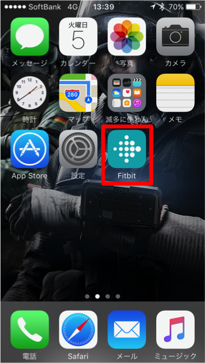

ながはま健康ウォークマニュアル
STEP1: Fitbitをインストールしよう
iPhoneにFitbitという歩数計測アプリケーションをインストールします。その手順をご説明します。
すでにインストールされている方はSTEP2からお読みください
1-1: まずApp Storeのアイコンを押してAppStoreを起動します。
1-2: 次に画面右下の検索を押し、「fitbit」と入力してください。
1-3: 出て来たFitbitをタッチし、ストアページで入手→インストールの順に押します。

1-4: iPhone内にこのようなアイコンが表示されれば、インストール完了です。
STEP2: Fitbitにアカウント登録しよう
Fitbitとながはま健康ウォークのサイトを紐づけるためにFitbitのアカウントを作成する必要があります。その手順をご説明します。
すでにFitbitのアカウントをお持ちの方はSTEP3からお読みください
iPhone内のFitbitアプリをタッチし、起動します。
起動後、Fitbitに登録を押し、Fitbitをお持ちではありませんか？を押します。
(すでにFitbitアカウントをお持ちの方はログインボタンからログインを行ってください)
Fitbit通話を設定を押して「あなたについて教えてください」という画面で次へ進むを押し、
身長や体重などをご入力ください。

アカウントの情報を登録します。
- フルネームはお好きなものをご入力ください。
- メールは後ほど使用するため、ひかえておいてください。
- パスワードは後ほど使用するため、ひかえておいてください。
ポリシー同意にチェックをつけてください。完了を押してください。
これでFitbitへのアカウント登録は完了となります。
STEP3: ながはま健康ウォークのサイトにログインしよう
今年のながはま健康ウォークのユーザページにログインする方法をご説明します。
まずSafariのアイコンを押してSafariを起動します。
こちらまたは下記QRコードから ながはま健康ウォークのページにいきます。

ログインを押して、事前にお送りさせていただいたIDとパスワードをご入力ください。
IDはnagaから始まるもの、パスワードは数字6ケタです。


このようなユーザページが表示されれば、ログイン完了となります。

STEP4: ながはま健康ウォークとFitbitのアカウントを紐付けよう
Fitbitのデータをながはま健康ウォークのページに反映するための方法をご説明します。
ユーザページ右上にありますプロファイルを押します。

スマートフォンアプリFitbitの設定の欄にあるFitbitの認証を押します。
FitbitアカウントのIDとパスワードをご入力いただき、ログインします。
許可を押して認証完了です。